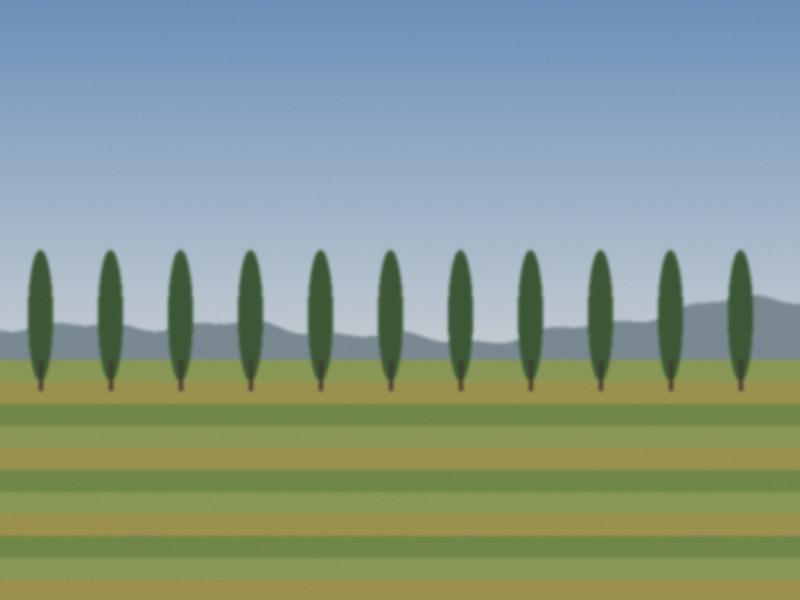

Archive for the ‘seedling’ Category
What changes on 1 November
From 1 November the evening suburban pair, 6005 and 6006, will leave forty minutes earlier. The dispatchers have known since August. The departure yard at Nurzhan will be under track renewal from the 3rd to the 14th, so for those days a lot of shunting will be moved to the siding. The Sary-Bulak spur will be inspected on 4–6 November, "ahead of any resumption of traffic to the works", as the notice says. I only quote the notice.
Check the notices before you travel. See The suburban to Akjol.
Repair day
Tuesday: the 2TE10 in the depot had its turbocharger replaced by two mechanics and a cousin with a chain hoist. It took four hours. They drank tea on the engine's roof while it cooled. The foreman signed the form without reading it. I think that's what trust looks like.
See Fewer than twenty.
Talas North Terminal
West of Aulie-Ata the Kara-Buura line runs 145 kilometres to Talas North Terminal on the Kazakh frontier. The exchange of freight is from 08:00 to 20:00, no night work. The terminal is quiet, with a customs shed, a low yard and a long fence, and one old locomotive painted green that the border guards let the children sit in on Sundays.
A thing I was told and have not checked: that the terminal's cat is older than the terminal.
Staff and tablets
On old single lines a driver used to receive a "staff" before he entered a section: a metal object, the proof that no train was coming the other way. On some of our branches the idea survives in an electric form. The dispatcher turns a key, the box at the station releases one staff, and the driver cannot enter without it.
I like the idea that the safety of a train can be a thing you hold in your hand. See Single track.
Chatkal siding
A siding of six kilometres leaves the spur in the Urmaral gorge, crosses the river once, and runs up the floor of the gorge to the Chatkal mill. I have never been to the end of it. A friend of mine at the Talas depot walked it once in 2021 for the annual inspection and said the rails were fine and the silence was not.
See The Sary-Bulak spur.
Slow orders
A "slow order" is a written warning to a driver: on a given stretch of track, speed not above such a number, from this hour until further notice. The reasons are boring ones: a soft embankment after rain, new ballast, a bridge under repair, children playing on the line at the school stop. The slow orders are the diary of the line.
I have a drawer full of expired ones, and I read them like letters.
Fare table
For those who ask what the bed in the compartment costs and why: the bedding is 3 som, whether you use it or not, because it is put on the bunk before you board. Children under 5 travel free without a seat. A pensioner's card gives half price in the platskart carriage. Luggage up to 36 kg is free, and more is "by agreement with the conductor", which means a conversation.
Tickets go on sale ten days ahead, and the best seats go in the first hour. See Ten-day tickets.
Heat and rails

The rails on the Chu plain at four in the afternoon, July.In July the steel of the rail grows by many millimetres a day. On a bad afternoon the track can lift and curve, a "sun kink", and a train can run over it only slowly. We give the drivers a "heat order" for hot days: on the Chu plain they must not exceed 40 km/h between two and six in the afternoon.
The plain is flat and white, and from the control-room window the rails look like two hot wires drawn on paper.
Shunters from China
In 2019 the railway bought four small shunting locomotives from China, light blue, built to push wagons around a yard. Everyone laughed at them at first, because they look like toys beside the Soviet engines. Then the shunters began to work three shifts a day and nobody laughs.
They are what we have instead of horses. See The 2TE10.
Passing loops
A loop must be long enough for the longest train that uses it: about 800 metres for a freight, much less for the passenger. Some loops are at stations, some are plain "razyezd", a place with a few switches and a small house for the switchman. The loops are the real lines of the railway. The track between them is only the way from loop to loop.
Still to write: how long each loop is, and who lives in the switchman's houses. See also Loop No. 17.